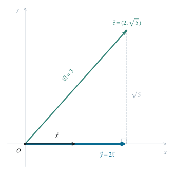

2.1 将长度条件写成内积
向量的模满足 ∣u∣2=u⋅u。因此 x⋅x=1，y⋅y=4。要计算含 y 的内积，先考察 y 与 2x 的差。
∣y−2x∣2=∣y∣2−4x⋅y+4∣x∣2=4−8+4=0. （1）2.2 确定向量关系
欧氏平面中，向量的模平方非负，且仅零向量的模平方为零。因此上式不仅给出两向量平行，还确定了方向及倍数：
y=2x. （2）也可以从柯西不等式 x⋅y≤∣x∣∣y∣=2 的等号条件得到同一结论；这里内积为正，故两向量同向。
2.3 计算并核对条件相容性
y⋅z=(2x)⋅z=2(x⋅z)=4. （3）条件 ∣z∣=3 与上述推导相容。例如取 x=(1,0)、y=(2,0)、z=(2,5)，其模和两个已知内积均满足题意。图中取 z 的纵坐标为正；取负值时答案不变。

图 1. 以 x 的方向为横轴：y=2x，z 在该方向上的投影长为 2。